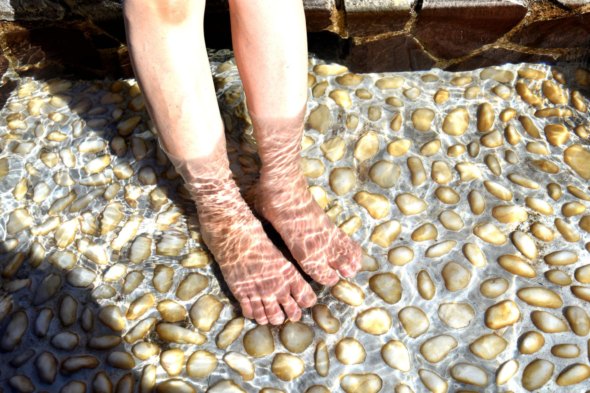

온천과 한 잔의 시너지
족욕과 바 한 잔이 주는 효과
-
술과 온천 궁합
-
이완 효과
-
정서적 안정
-
혈행·피로 개선
-
숙면
02. 족욕에 효능

혈행 개선
따뜻한 물에 발을 담그면 말초 혈관이 확장되어 혈액 순환이 좋아집니다.

피로 회복
족욕으로 근육이 이완되고 쌓인 피로가 풀려 몸이 가벼워집니다.

숙면·이완
저녁 족욕은 심신을 진정시켜 숙면에 도움이 됩니다.